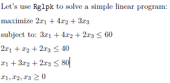
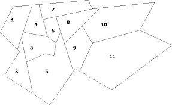

<!DOCTYPE html>
<html xmlns="http://www.w3.org/1999/xhtml" lang="en" xml:lang="en"><head>

<meta charset="utf-8">
<meta name="generator" content="quarto-1.8.25">

<meta name="viewport" content="width=device-width, initial-scale=1.0, user-scalable=yes">

<meta name="author" content="Moi">

<title>LP Problem Exercises</title>
<style>
code{white-space: pre-wrap;}
span.smallcaps{font-variant: small-caps;}
div.columns{display: flex; gap: min(4vw, 1.5em);}
div.column{flex: auto; overflow-x: auto;}
div.hanging-indent{margin-left: 1.5em; text-indent: -1.5em;}
ul.task-list{list-style: none;}
ul.task-list li input[type="checkbox"] {
  width: 0.8em;
  margin: 0 0.8em 0.2em -1em; /* quarto-specific, see https://github.com/quarto-dev/quarto-cli/issues/4556 */ 
  vertical-align: middle;
}
/* CSS for syntax highlighting */
html { -webkit-text-size-adjust: 100%; }
pre > code.sourceCode { white-space: pre; position: relative; }
pre > code.sourceCode > span { display: inline-block; line-height: 1.25; }
pre > code.sourceCode > span:empty { height: 1.2em; }
.sourceCode { overflow: visible; }
code.sourceCode > span { color: inherit; text-decoration: inherit; }
div.sourceCode { margin: 1em 0; }
pre.sourceCode { margin: 0; }
@media screen {
div.sourceCode { overflow: auto; }
}
@media print {
pre > code.sourceCode { white-space: pre-wrap; }
pre > code.sourceCode > span { text-indent: -5em; padding-left: 5em; }
}
pre.numberSource code
  { counter-reset: source-line 0; }
pre.numberSource code > span
  { position: relative; left: -4em; counter-increment: source-line; }
pre.numberSource code > span > a:first-child::before
  { content: counter(source-line);
    position: relative; left: -1em; text-align: right; vertical-align: baseline;
    border: none; display: inline-block;
    -webkit-touch-callout: none; -webkit-user-select: none;
    -khtml-user-select: none; -moz-user-select: none;
    -ms-user-select: none; user-select: none;
    padding: 0 4px; width: 4em;
  }
pre.numberSource { margin-left: 3em;  padding-left: 4px; }
div.sourceCode
  {   }
@media screen {
pre > code.sourceCode > span > a:first-child::before { text-decoration: underline; }
}
</style>


<script src="LP R Exercises_files/libs/clipboard/clipboard.min.js"></script>
<script src="LP R Exercises_files/libs/quarto-html/quarto.js" type="module"></script>
<script src="LP R Exercises_files/libs/quarto-html/tabsets/tabsets.js" type="module"></script>
<script src="LP R Exercises_files/libs/quarto-html/axe/axe-check.js" type="module"></script>
<script src="LP R Exercises_files/libs/quarto-html/popper.min.js"></script>
<script src="LP R Exercises_files/libs/quarto-html/tippy.umd.min.js"></script>
<script src="LP R Exercises_files/libs/quarto-html/anchor.min.js"></script>
<link href="LP R Exercises_files/libs/quarto-html/tippy.css" rel="stylesheet">
<link href="LP R Exercises_files/libs/quarto-html/quarto-syntax-highlighting-7b89279ff1a6dce999919e0e67d4d9ec.css" rel="stylesheet" id="quarto-text-highlighting-styles">
<script src="LP R Exercises_files/libs/bootstrap/bootstrap.min.js"></script>
<link href="LP R Exercises_files/libs/bootstrap/bootstrap-icons.css" rel="stylesheet">
<link href="LP R Exercises_files/libs/bootstrap/bootstrap-9e3ffae467580fdb927a41352e75a2e0.min.css" rel="stylesheet" append-hash="true" id="quarto-bootstrap" data-mode="light">


</head>

<body class="fullcontent quarto-light">

<div id="quarto-content" class="page-columns page-rows-contents page-layout-article">

<main class="content" id="quarto-document-content">

<header id="title-block-header" class="quarto-title-block default">
<div class="quarto-title">
<h1 class="title">LP Problem Exercises</h1>
</div>


<div class="quarto-title-meta">

    <div>
    <div class="quarto-title-meta-heading">Author</div>
    <div class="quarto-title-meta-contents">
             <p>Moi </p>
          </div>
  </div>
    
  
    
  </div>
  


</header>


<div class="cell">
<div class="code-copy-outer-scaffold"><div class="sourceCode cell-code" id="cb1"><pre class="sourceCode r code-with-copy"><code class="sourceCode r"><span id="cb1-1"><a href="#cb1-1" aria-hidden="true" tabindex="-1"></a><span class="fu">library</span>(Rglpk)</span></code></pre></div><button title="Copy to Clipboard" class="code-copy-button"><i class="bi"></i></button></div>
<div class="cell-output cell-output-stderr">
<pre><code>Warning: package 'Rglpk' was built under R version 4.5.3</code></pre>
</div>
<div class="cell-output cell-output-stderr">
<pre><code>Loading required package: slam</code></pre>
</div>
<div class="cell-output cell-output-stderr">
<pre><code>Warning: package 'slam' was built under R version 4.5.3</code></pre>
</div>
<div class="cell-output cell-output-stderr">
<pre><code>Using the GLPK callable library version 5.0</code></pre>
</div>
</div>
<p>a) Matrix- Vector Formulation for</p>
<p></p>
<div class="cell">
<div class="code-copy-outer-scaffold"><div class="sourceCode cell-code" id="cb6"><pre class="sourceCode r code-with-copy"><code class="sourceCode r"><span id="cb6-1"><a href="#cb6-1" aria-hidden="true" tabindex="-1"></a>obj_vector<span class="ot">=</span><span class="fu">c</span>(<span class="dv">2</span>,<span class="dv">4</span>,<span class="dv">3</span>);obj_vector</span></code></pre></div><button title="Copy to Clipboard" class="code-copy-button"><i class="bi"></i></button></div>
<div class="cell-output cell-output-stdout">
<pre><code>[1] 2 4 3</code></pre>
</div>
<div class="code-copy-outer-scaffold"><div class="sourceCode cell-code" id="cb8"><pre class="sourceCode r code-with-copy"><code class="sourceCode r"><span id="cb8-1"><a href="#cb8-1" aria-hidden="true" tabindex="-1"></a>constraint_mat<span class="ot">=</span><span class="fu">rbind</span>(<span class="fu">c</span>(<span class="dv">3</span>,<span class="dv">4</span>,<span class="dv">2</span>),<span class="fu">c</span>(<span class="dv">2</span>,<span class="dv">1</span>,<span class="dv">2</span>),<span class="fu">c</span>(<span class="dv">1</span>,<span class="dv">3</span>,<span class="dv">2</span>),<span class="fu">c</span>(<span class="dv">1</span>,<span class="dv">1</span>,<span class="dv">1</span>));constraint_mat</span></code></pre></div><button title="Copy to Clipboard" class="code-copy-button"><i class="bi"></i></button></div>
<div class="cell-output cell-output-stdout">
<pre><code>     [,1] [,2] [,3]
[1,]    3    4    2
[2,]    2    1    2
[3,]    1    3    2
[4,]    1    1    1</code></pre>
</div>
<div class="code-copy-outer-scaffold"><div class="sourceCode cell-code" id="cb10"><pre class="sourceCode r code-with-copy"><code class="sourceCode r"><span id="cb10-1"><a href="#cb10-1" aria-hidden="true" tabindex="-1"></a>cons_sign<span class="ot">=</span><span class="fu">c</span>(<span class="st">'&lt;='</span>,<span class="st">'&lt;='</span>,<span class="st">'&lt;='</span>,<span class="st">'&gt;='</span>);cons_sign</span></code></pre></div><button title="Copy to Clipboard" class="code-copy-button"><i class="bi"></i></button></div>
<div class="cell-output cell-output-stdout">
<pre><code>[1] "&lt;=" "&lt;=" "&lt;=" "&gt;="</code></pre>
</div>
<div class="code-copy-outer-scaffold"><div class="sourceCode cell-code" id="cb12"><pre class="sourceCode r code-with-copy"><code class="sourceCode r"><span id="cb12-1"><a href="#cb12-1" aria-hidden="true" tabindex="-1"></a>rhs_con<span class="ot">=</span><span class="fu">c</span>(<span class="dv">60</span>,<span class="dv">40</span>,<span class="dv">80</span>,<span class="dv">0</span>);rhs_con</span></code></pre></div><button title="Copy to Clipboard" class="code-copy-button"><i class="bi"></i></button></div>
<div class="cell-output cell-output-stdout">
<pre><code>[1] 60 40 80  0</code></pre>
</div>
<div class="code-copy-outer-scaffold"><div class="sourceCode cell-code" id="cb14"><pre class="sourceCode r code-with-copy"><code class="sourceCode r"><span id="cb14-1"><a href="#cb14-1" aria-hidden="true" tabindex="-1"></a><span class="fu">Rglpk_solve_LP</span>(<span class="at">obj =</span> obj_vector, <span class="at">mat =</span> constraint_mat, <span class="at">dir =</span> cons_sign, <span class="at">rhs =</span> rhs_con, <span class="at">max =</span> <span class="cn">TRUE</span>) <span class="co"># use Max since this is a maximization problem, min if it was minimization</span></span></code></pre></div><button title="Copy to Clipboard" class="code-copy-button"><i class="bi"></i></button></div>
<div class="cell-output cell-output-stdout">
<pre><code>$optimum
[1] 76.66667

$solution
[1]  0.000000  6.666667 16.666667

$status
[1] 0

$solution_dual
[1] -1.833333  0.000000  0.000000

$auxiliary
$auxiliary$primal
[1] 60.00000 40.00000 53.33333 23.33333

$auxiliary$dual
[1] 0.8333333 0.6666667 0.0000000 0.0000000


$sensitivity_report
[1] NA</code></pre>
</div>
</div>
<div class="cell">
<div class="code-copy-outer-scaffold"><div class="sourceCode cell-code" id="cb16"><pre class="sourceCode r code-with-copy"><code class="sourceCode r"><span id="cb16-1"><a href="#cb16-1" aria-hidden="true" tabindex="-1"></a><span class="co"># Maximise the total skill ST cost contraint</span></span>
<span id="cb16-2"><a href="#cb16-2" aria-hidden="true" tabindex="-1"></a></span>
<span id="cb16-3"><a href="#cb16-3" aria-hidden="true" tabindex="-1"></a>name <span class="ot">&lt;-</span> <span class="fu">c</span>(<span class="st">"Aaron"</span>, <span class="st">"Vongani"</span>, <span class="st">"Njabulo"</span>, <span class="st">"Ray"</span>, <span class="st">"Ace"</span>, <span class="st">"Alyssa"</span>, <span class="st">"Larry"</span>, <span class="st">"Wes"</span>, <span class="st">"Mpho"</span>, <span class="st">"Jimmy"</span>)</span>
<span id="cb16-4"><a href="#cb16-4" aria-hidden="true" tabindex="-1"></a>pos <span class="ot">&lt;-</span> <span class="fu">c</span>(<span class="st">"STR"</span>, <span class="st">"STR"</span>, <span class="st">"DEF"</span>, <span class="st">"DEF"</span>, <span class="st">"DEF"</span>, <span class="st">"MID"</span>, <span class="st">"MID"</span>, <span class="st">"MID"</span>, <span class="st">"GK"</span>, <span class="st">"GK"</span>)</span>
<span id="cb16-5"><a href="#cb16-5" aria-hidden="true" tabindex="-1"></a>skill <span class="ot">&lt;-</span> <span class="fu">c</span>(<span class="dv">167</span>, <span class="dv">136</span>, <span class="dv">195</span>, <span class="dv">174</span>, <span class="dv">144</span>, <span class="dv">135</span>, <span class="dv">89</span>, <span class="dv">81</span>, <span class="dv">114</span>, <span class="dv">111</span>)</span>
<span id="cb16-6"><a href="#cb16-6" aria-hidden="true" tabindex="-1"></a>cost <span class="ot">&lt;-</span> <span class="fu">c</span>(<span class="dv">60</span>, <span class="dv">47</span>, <span class="dv">63</span>, <span class="dv">62</span>, <span class="dv">40</span>, <span class="dv">60</span>, <span class="dv">50</span>, <span class="dv">35</span>, <span class="dv">40</span>, <span class="dv">40</span>)</span>
<span id="cb16-7"><a href="#cb16-7" aria-hidden="true" tabindex="-1"></a></span>
<span id="cb16-8"><a href="#cb16-8" aria-hidden="true" tabindex="-1"></a><span class="co">#Decision var xi equal eithet 0 (exclusion) or 1(inclusion)</span></span>
<span id="cb16-9"><a href="#cb16-9" aria-hidden="true" tabindex="-1"></a></span>
<span id="cb16-10"><a href="#cb16-10" aria-hidden="true" tabindex="-1"></a>obj_vector<span class="ot">=</span>skill</span>
<span id="cb16-11"><a href="#cb16-11" aria-hidden="true" tabindex="-1"></a></span>
<span id="cb16-12"><a href="#cb16-12" aria-hidden="true" tabindex="-1"></a></span>
<span id="cb16-13"><a href="#cb16-13" aria-hidden="true" tabindex="-1"></a><span class="co"># Contrainsts</span></span>
<span id="cb16-14"><a href="#cb16-14" aria-hidden="true" tabindex="-1"></a>cons_str<span class="ot">=</span><span class="fu">c</span>(<span class="dv">1</span>,<span class="dv">1</span>,<span class="fu">rep</span>(<span class="dv">0</span>,<span class="fu">length</span>(name)<span class="sc">-</span><span class="dv">2</span>)) <span class="co"># striker constriant</span></span>
<span id="cb16-15"><a href="#cb16-15" aria-hidden="true" tabindex="-1"></a>cons_def<span class="ot">=</span><span class="fu">c</span>(<span class="fu">rep</span>(<span class="dv">0</span>,<span class="dv">2</span>),<span class="dv">1</span>,<span class="dv">1</span>,<span class="dv">1</span>,<span class="fu">rep</span>(<span class="dv">0</span>,<span class="fu">length</span>(name)<span class="sc">-</span><span class="dv">5</span>)) <span class="co"># defender constraint</span></span>
<span id="cb16-16"><a href="#cb16-16" aria-hidden="true" tabindex="-1"></a>cons_mid<span class="ot">=</span><span class="fu">c</span>(<span class="fu">rep</span>(<span class="dv">0</span>,<span class="dv">5</span>),<span class="dv">1</span>,<span class="dv">1</span>,<span class="dv">1</span>,<span class="fu">rep</span>(<span class="dv">0</span>,<span class="fu">length</span>(name)<span class="sc">-</span><span class="dv">8</span>)) <span class="co">#midfielder constraint</span></span>
<span id="cb16-17"><a href="#cb16-17" aria-hidden="true" tabindex="-1"></a>cons_gk<span class="ot">=</span><span class="fu">c</span>(<span class="fu">rep</span>(<span class="dv">0</span>,<span class="dv">8</span>),<span class="dv">1</span>,<span class="dv">1</span>) <span class="co">#GK constraint</span></span>
<span id="cb16-18"><a href="#cb16-18" aria-hidden="true" tabindex="-1"></a></span>
<span id="cb16-19"><a href="#cb16-19" aria-hidden="true" tabindex="-1"></a><span class="fu">length</span>(cost);<span class="fu">length</span>(cons_str);<span class="fu">length</span>(cons_def);<span class="fu">length</span>(cons_mid);cons_gk</span></code></pre></div><button title="Copy to Clipboard" class="code-copy-button"><i class="bi"></i></button></div>
<div class="cell-output cell-output-stdout">
<pre><code>[1] 10</code></pre>
</div>
<div class="cell-output cell-output-stdout">
<pre><code>[1] 10</code></pre>
</div>
<div class="cell-output cell-output-stdout">
<pre><code>[1] 10</code></pre>
</div>
<div class="cell-output cell-output-stdout">
<pre><code>[1] 10</code></pre>
</div>
<div class="cell-output cell-output-stdout">
<pre><code> [1] 0 0 0 0 0 0 0 0 1 1</code></pre>
</div>
<div class="code-copy-outer-scaffold"><div class="sourceCode cell-code" id="cb22"><pre class="sourceCode r code-with-copy"><code class="sourceCode r"><span id="cb22-1"><a href="#cb22-1" aria-hidden="true" tabindex="-1"></a>cons_mat<span class="ot">=</span><span class="fu">rbind</span>(cost,cons_str,cons_def,cons_mid,cons_gk)</span>
<span id="cb22-2"><a href="#cb22-2" aria-hidden="true" tabindex="-1"></a>cons_mat</span></code></pre></div><button title="Copy to Clipboard" class="code-copy-button"><i class="bi"></i></button></div>
<div class="cell-output cell-output-stdout">
<pre><code>         [,1] [,2] [,3] [,4] [,5] [,6] [,7] [,8] [,9] [,10]
cost       60   47   63   62   40   60   50   35   40    40
cons_str    1    1    0    0    0    0    0    0    0     0
cons_def    0    0    1    1    1    0    0    0    0     0
cons_mid    0    0    0    0    0    1    1    1    0     0
cons_gk     0    0    0    0    0    0    0    0    1     1</code></pre>
</div>
<div class="code-copy-outer-scaffold"><div class="sourceCode cell-code" id="cb24"><pre class="sourceCode r code-with-copy"><code class="sourceCode r"><span id="cb24-1"><a href="#cb24-1" aria-hidden="true" tabindex="-1"></a>rhs_<span class="ot">=</span><span class="fu">c</span>(<span class="dv">300</span>,<span class="dv">1</span>,<span class="dv">2</span>,<span class="dv">2</span>,<span class="dv">1</span>)</span>
<span id="cb24-2"><a href="#cb24-2" aria-hidden="true" tabindex="-1"></a>signs<span class="ot">=</span><span class="fu">c</span>(<span class="st">'&lt;'</span>,<span class="st">'=='</span>,<span class="st">'=='</span>,<span class="st">'=='</span>,<span class="st">'=='</span>)</span>
<span id="cb24-3"><a href="#cb24-3" aria-hidden="true" tabindex="-1"></a></span>
<span id="cb24-4"><a href="#cb24-4" aria-hidden="true" tabindex="-1"></a>my_types <span class="ot">&lt;-</span> <span class="fu">rep</span>(<span class="st">"B"</span>, <span class="fu">length</span>(name)) <span class="co"># enforces boolean output!</span></span>
<span id="cb24-5"><a href="#cb24-5" aria-hidden="true" tabindex="-1"></a></span>
<span id="cb24-6"><a href="#cb24-6" aria-hidden="true" tabindex="-1"></a>lp_sol<span class="ot">=</span><span class="fu">Rglpk_solve_LP</span>(<span class="at">obj =</span> obj_vector, <span class="at">mat =</span> cons_mat, <span class="at">types =</span> my_types,,<span class="at">dir =</span> signs, <span class="at">rhs =</span> rhs_, <span class="at">max =</span> <span class="cn">TRUE</span>) </span>
<span id="cb24-7"><a href="#cb24-7" aria-hidden="true" tabindex="-1"></a></span>
<span id="cb24-8"><a href="#cb24-8" aria-hidden="true" tabindex="-1"></a></span>
<span id="cb24-9"><a href="#cb24-9" aria-hidden="true" tabindex="-1"></a></span>
<span id="cb24-10"><a href="#cb24-10" aria-hidden="true" tabindex="-1"></a><span class="co"># Get chosen </span></span>
<span id="cb24-11"><a href="#cb24-11" aria-hidden="true" tabindex="-1"></a>chosen_players<span class="ot">=</span>name[<span class="fu">which</span>(lp_sol<span class="sc">$</span>solution<span class="sc">==</span><span class="dv">1</span>)];chosen_players</span></code></pre></div><button title="Copy to Clipboard" class="code-copy-button"><i class="bi"></i></button></div>
<div class="cell-output cell-output-stdout">
<pre><code>[1] "Aaron"   "Njabulo" "Ace"     "Alyssa"  "Wes"     "Mpho"   </code></pre>
</div>
<div class="code-copy-outer-scaffold"><div class="sourceCode cell-code" id="cb26"><pre class="sourceCode r code-with-copy"><code class="sourceCode r"><span id="cb26-1"><a href="#cb26-1" aria-hidden="true" tabindex="-1"></a>lp_sol</span></code></pre></div><button title="Copy to Clipboard" class="code-copy-button"><i class="bi"></i></button></div>
<div class="cell-output cell-output-stdout">
<pre><code>$optimum
[1] 836

$solution
 [1] 1 0 1 0 1 1 0 1 1 0

$status
[1] 0

$solution_dual
[1] NA

$auxiliary
$auxiliary$primal
[1] 298   1   2   2   1

$auxiliary$dual
[1] NA


$sensitivity_report
[1] NA</code></pre>
</div>
</div>
<section id="using-sparse-matrices-instead" class="level3">
<h3 class="anchored" data-anchor-id="using-sparse-matrices-instead">Using Sparse Matrices Instead</h3>
<div class="cell">
<div class="code-copy-outer-scaffold"><div class="sourceCode cell-code" id="cb28"><pre class="sourceCode r code-with-copy"><code class="sourceCode r"><span id="cb28-1"><a href="#cb28-1" aria-hidden="true" tabindex="-1"></a>example_mat<span class="ot">=</span><span class="fu">matrix</span>(<span class="fu">c</span>(<span class="dv">0</span>, <span class="dv">1</span>, <span class="dv">0</span>, <span class="dv">0</span>, <span class="dv">0</span>, <span class="dv">0</span>, <span class="dv">0</span>, <span class="dv">0</span>, <span class="dv">0</span>, <span class="dv">0</span>, <span class="dv">3</span>, <span class="dv">0</span>), <span class="at">nrow =</span> <span class="dv">4</span>, <span class="at">ncol =</span> <span class="dv">3</span>)</span>
<span id="cb28-2"><a href="#cb28-2" aria-hidden="true" tabindex="-1"></a></span>
<span id="cb28-3"><a href="#cb28-3" aria-hidden="true" tabindex="-1"></a><span class="co"># get indicies of values that are non-zero</span></span>
<span id="cb28-4"><a href="#cb28-4" aria-hidden="true" tabindex="-1"></a>non_zero_positions<span class="ot">=</span><span class="fu">which</span>(example_mat<span class="sc">!=</span><span class="dv">0</span>,<span class="at">arr.ind =</span> T)</span>
<span id="cb28-5"><a href="#cb28-5" aria-hidden="true" tabindex="-1"></a></span>
<span id="cb28-6"><a href="#cb28-6" aria-hidden="true" tabindex="-1"></a></span>
<span id="cb28-7"><a href="#cb28-7" aria-hidden="true" tabindex="-1"></a><span class="co">#extract these values</span></span>
<span id="cb28-8"><a href="#cb28-8" aria-hidden="true" tabindex="-1"></a><span class="cf">for</span>(i <span class="cf">in</span> <span class="dv">1</span><span class="sc">:</span><span class="fu">dim</span>(non_zero_positions)[<span class="dv">1</span>]){</span>
<span id="cb28-9"><a href="#cb28-9" aria-hidden="true" tabindex="-1"></a>  non_zero_val<span class="ot">=</span>example_mat[<span class="fu">unname</span>(non_zero_positions[i,])[<span class="dv">1</span>],<span class="fu">unname</span>(non_zero_positions[i,])[<span class="dv">2</span>]]</span>
<span id="cb28-10"><a href="#cb28-10" aria-hidden="true" tabindex="-1"></a>  <span class="fu">print</span>(non_zero_val)</span>
<span id="cb28-11"><a href="#cb28-11" aria-hidden="true" tabindex="-1"></a></span>
<span id="cb28-12"><a href="#cb28-12" aria-hidden="true" tabindex="-1"></a>}</span></code></pre></div><button title="Copy to Clipboard" class="code-copy-button"><i class="bi"></i></button></div>
<div class="cell-output cell-output-stdout">
<pre><code>[1] 1
[1] 3</code></pre>
</div>
<div class="code-copy-outer-scaffold"><div class="sourceCode cell-code" id="cb30"><pre class="sourceCode r code-with-copy"><code class="sourceCode r"><span id="cb30-1"><a href="#cb30-1" aria-hidden="true" tabindex="-1"></a><span class="co"># Use sparse mat</span></span>
<span id="cb30-2"><a href="#cb30-2" aria-hidden="true" tabindex="-1"></a><span class="co"># notation i=c() col indicies, j=row indicies</span></span>
<span id="cb30-3"><a href="#cb30-3" aria-hidden="true" tabindex="-1"></a></span>
<span id="cb30-4"><a href="#cb30-4" aria-hidden="true" tabindex="-1"></a><span class="fu">data.frame</span>(<span class="at">i=</span><span class="fu">c</span>( <span class="fu">unname</span>(non_zero_positions[,<span class="st">'row'</span>])   ), <span class="at">j=</span><span class="fu">c</span>( <span class="fu">unname</span>(non_zero_positions[,<span class="st">'col'</span>])   ) ,<span class="at">value=</span><span class="fu">c</span>(<span class="dv">1</span>,<span class="dv">3</span>) )</span></code></pre></div><button title="Copy to Clipboard" class="code-copy-button"><i class="bi"></i></button></div>
<div class="cell-output cell-output-stdout">
<pre><code>  i j value
1 2 1     1
2 3 3     3</code></pre>
</div>
<div class="code-copy-outer-scaffold"><div class="sourceCode cell-code" id="cb32"><pre class="sourceCode r code-with-copy"><code class="sourceCode r"><span id="cb32-1"><a href="#cb32-1" aria-hidden="true" tabindex="-1"></a><span class="co"># Sparse Matrix for the football problem</span></span>
<span id="cb32-2"><a href="#cb32-2" aria-hidden="true" tabindex="-1"></a></span>
<span id="cb32-3"><a href="#cb32-3" aria-hidden="true" tabindex="-1"></a></span>
<span id="cb32-4"><a href="#cb32-4" aria-hidden="true" tabindex="-1"></a></span>
<span id="cb32-5"><a href="#cb32-5" aria-hidden="true" tabindex="-1"></a><span class="co"># i= row indicies of non zero values, repeated for n nonzero values in THAT row</span></span>
<span id="cb32-6"><a href="#cb32-6" aria-hidden="true" tabindex="-1"></a><span class="co"># j= col indicies of non zero values, repeated for n nonzero values in THAT col</span></span>
<span id="cb32-7"><a href="#cb32-7" aria-hidden="true" tabindex="-1"></a>my_i <span class="ot">&lt;-</span> <span class="fu">c</span>(<span class="dv">1</span>, <span class="dv">1</span>, <span class="dv">2</span>, <span class="dv">2</span>, <span class="dv">2</span>, <span class="dv">3</span>, <span class="dv">3</span>, <span class="dv">3</span>, <span class="dv">4</span>, <span class="dv">4</span>) <span class="co"># row indices, e.g there are 2 non zero vals in the first row hence 1,1</span></span>
<span id="cb32-8"><a href="#cb32-8" aria-hidden="true" tabindex="-1"></a></span>
<span id="cb32-9"><a href="#cb32-9" aria-hidden="true" tabindex="-1"></a>my_j <span class="ot">&lt;-</span> <span class="fu">c</span>(<span class="dv">1</span>, <span class="dv">2</span>, <span class="dv">3</span>, <span class="dv">4</span>, <span class="dv">5</span>, <span class="dv">6</span>, <span class="dv">7</span>, <span class="dv">8</span>, <span class="dv">9</span>, <span class="dv">10</span>) <span class="co"># col indicies, same logic</span></span>
<span id="cb32-10"><a href="#cb32-10" aria-hidden="true" tabindex="-1"></a></span>
<span id="cb32-11"><a href="#cb32-11" aria-hidden="true" tabindex="-1"></a>my_v <span class="ot">&lt;-</span> <span class="fu">rep</span>(<span class="dv">1</span>, <span class="dv">10</span>) <span class="co"># coefficients, in this case all non_zero vals=1</span></span>
<span id="cb32-12"><a href="#cb32-12" aria-hidden="true" tabindex="-1"></a></span>
<span id="cb32-13"><a href="#cb32-13" aria-hidden="true" tabindex="-1"></a><span class="co"># Store in sparse</span></span>
<span id="cb32-14"><a href="#cb32-14" aria-hidden="true" tabindex="-1"></a></span>
<span id="cb32-15"><a href="#cb32-15" aria-hidden="true" tabindex="-1"></a>sparse_mat_positions <span class="ot">&lt;-</span> <span class="fu">simple_triplet_matrix</span>(<span class="at">i =</span> my_i, <span class="at">j =</span> my_j, <span class="at">v =</span> my_v)</span>
<span id="cb32-16"><a href="#cb32-16" aria-hidden="true" tabindex="-1"></a></span>
<span id="cb32-17"><a href="#cb32-17" aria-hidden="true" tabindex="-1"></a><span class="co"># Apply the same format for the cost constraint </span></span>
<span id="cb32-18"><a href="#cb32-18" aria-hidden="true" tabindex="-1"></a></span>
<span id="cb32-19"><a href="#cb32-19" aria-hidden="true" tabindex="-1"></a>sparse_mat_costs <span class="ot">&lt;-</span> <span class="fu">simple_triplet_matrix</span>(<span class="at">i =</span> <span class="fu">rep</span>(<span class="dv">1</span>, <span class="dv">10</span>), <span class="at">j =</span> <span class="dv">1</span><span class="sc">:</span><span class="dv">10</span>, <span class="at">v =</span> cost)</span>
<span id="cb32-20"><a href="#cb32-20" aria-hidden="true" tabindex="-1"></a></span>
<span id="cb32-21"><a href="#cb32-21" aria-hidden="true" tabindex="-1"></a></span>
<span id="cb32-22"><a href="#cb32-22" aria-hidden="true" tabindex="-1"></a><span class="co"># Now rbind the two to get the complete constraint matrix</span></span>
<span id="cb32-23"><a href="#cb32-23" aria-hidden="true" tabindex="-1"></a></span>
<span id="cb32-24"><a href="#cb32-24" aria-hidden="true" tabindex="-1"></a>sparse_mat <span class="ot">&lt;-</span> <span class="fu">rbind</span>(sparse_mat_positions,sparse_mat_costs)</span>
<span id="cb32-25"><a href="#cb32-25" aria-hidden="true" tabindex="-1"></a><span class="fu">table</span>(sparse_mat<span class="sc">$</span>i) <span class="co"># How many values in row i are non zero</span></span></code></pre></div><button title="Copy to Clipboard" class="code-copy-button"><i class="bi"></i></button></div>
<div class="cell-output cell-output-stdout">
<pre><code>
 1  2  3  4  5 
 2  3  3  2 10 </code></pre>
</div>
<div class="code-copy-outer-scaffold"><div class="sourceCode cell-code" id="cb34"><pre class="sourceCode r code-with-copy"><code class="sourceCode r"><span id="cb34-1"><a href="#cb34-1" aria-hidden="true" tabindex="-1"></a><span class="co"># Alternatively without using Rbind</span></span>
<span id="cb34-2"><a href="#cb34-2" aria-hidden="true" tabindex="-1"></a>alt_sparse_mat <span class="ot">&lt;-</span> <span class="fu">simple_triplet_matrix</span>(<span class="at">i =</span> <span class="fu">c</span>(my_i, <span class="fu">rep</span>(<span class="dv">5</span>, <span class="dv">10</span>)), <span class="at">j =</span> <span class="fu">c</span>(my_j, <span class="dv">1</span><span class="sc">:</span><span class="dv">10</span>), <span class="at">v =</span> <span class="fu">c</span>(my_v, cost))</span>
<span id="cb34-3"><a href="#cb34-3" aria-hidden="true" tabindex="-1"></a></span>
<span id="cb34-4"><a href="#cb34-4" aria-hidden="true" tabindex="-1"></a></span>
<span id="cb34-5"><a href="#cb34-5" aria-hidden="true" tabindex="-1"></a></span>
<span id="cb34-6"><a href="#cb34-6" aria-hidden="true" tabindex="-1"></a></span>
<span id="cb34-7"><a href="#cb34-7" aria-hidden="true" tabindex="-1"></a><span class="co"># Now solve as before</span></span>
<span id="cb34-8"><a href="#cb34-8" aria-hidden="true" tabindex="-1"></a><span class="fu">Rglpk_solve_LP</span>(<span class="at">obj =</span> skill, <span class="at">mat =</span> alt_sparse_mat , <span class="at">types =</span> my_types,<span class="at">dir =</span> signs, <span class="at">rhs =</span> rhs_, <span class="at">max =</span> <span class="cn">TRUE</span>) </span></code></pre></div><button title="Copy to Clipboard" class="code-copy-button"><i class="bi"></i></button></div>
<div class="cell-output cell-output-stdout">
<pre><code>$optimum
[1] 0

$solution
 [1] 0 0 0 0 0 0 0 0 0 0

$status
[1] 1

$solution_dual
[1] NA

$auxiliary
$auxiliary$primal
[1] 0 0 0 0 0

$auxiliary$dual
[1] NA


$sensitivity_report
[1] NA</code></pre>
</div>
</div>
</section>
<section id="more-examples" class="level3">
<h3 class="anchored" data-anchor-id="more-examples">More Examples</h3>
<p><strong>Project Choice Example<br>
</strong>Suppose we have identied four investment opportunities and we have R14000 to invest. Project 1 requires an investment of R5,000 and has a present value (a time-discounted value) of R8,000; Project 2 requires R7,000 and has a value of R11,000; Project 3 requires R4,000 and has a value of R6,000; and Project 4 requires R3,000 and has a value of R4,000. <strong>The question is: into which projects should we place our money in order to maximize our total present value?</strong></p>
<ul>
<li><p>Only two projects can be selected</p></li>
<li><p>If project 1 is selected, project 3 must also be selected</p></li>
<li><p>If project 2 is selected, project 4 cannot be selected</p></li>
</ul>
<div class="cell">
<div class="code-copy-outer-scaffold"><div class="sourceCode cell-code" id="cb36"><pre class="sourceCode r code-with-copy"><code class="sourceCode r"><span id="cb36-1"><a href="#cb36-1" aria-hidden="true" tabindex="-1"></a>obj_vals<span class="ot">=</span><span class="fu">c</span>(<span class="dv">8</span>,<span class="dv">11</span>,<span class="dv">6</span>,<span class="dv">4</span>) <span class="co"># cost coeff in obj</span></span>
<span id="cb36-2"><a href="#cb36-2" aria-hidden="true" tabindex="-1"></a>cost_cont<span class="ot">=</span><span class="fu">c</span>(<span class="dv">5</span>,<span class="dv">7</span>,<span class="dv">4</span>,<span class="dv">3</span>) <span class="co">#cost constrint</span></span>
<span id="cb36-3"><a href="#cb36-3" aria-hidden="true" tabindex="-1"></a>num_cont<span class="ot">=</span><span class="fu">c</span>(<span class="dv">1</span>,<span class="dv">1</span>,<span class="dv">1</span>,<span class="dv">1</span>)<span class="co"># nr of investments contsr</span></span>
<span id="cb36-4"><a href="#cb36-4" aria-hidden="true" tabindex="-1"></a>choice_cont1<span class="ot">=</span><span class="fu">c</span>(<span class="dv">1</span>,<span class="dv">0</span>,<span class="dv">1</span>,<span class="dv">0</span>) <span class="co"># proj choice 1</span></span>
<span id="cb36-5"><a href="#cb36-5" aria-hidden="true" tabindex="-1"></a>choice_cont2<span class="ot">=</span><span class="fu">c</span>(<span class="dv">1</span>,<span class="dv">1</span>,<span class="dv">1</span>,<span class="dv">0</span>) <span class="co">#proj choice 2</span></span>
<span id="cb36-6"><a href="#cb36-6" aria-hidden="true" tabindex="-1"></a></span>
<span id="cb36-7"><a href="#cb36-7" aria-hidden="true" tabindex="-1"></a>const_matrix<span class="ot">=</span><span class="fu">rbind</span>(cost_cont,num_cont,choice_cont1,choice_cont2);const_matrix</span></code></pre></div><button title="Copy to Clipboard" class="code-copy-button"><i class="bi"></i></button></div>
<div class="cell-output cell-output-stdout">
<pre><code>             [,1] [,2] [,3] [,4]
cost_cont       5    7    4    3
num_cont        1    1    1    1
choice_cont1    1    0    1    0
choice_cont2    1    1    1    0</code></pre>
</div>
<div class="code-copy-outer-scaffold"><div class="sourceCode cell-code" id="cb38"><pre class="sourceCode r code-with-copy"><code class="sourceCode r"><span id="cb38-1"><a href="#cb38-1" aria-hidden="true" tabindex="-1"></a>rhs_<span class="ot">=</span><span class="fu">c</span>(<span class="dv">14</span>,<span class="dv">2</span>,<span class="dv">2</span>,<span class="dv">2</span>) <span class="co"># constrain vals cost, nr of invs</span></span>
<span id="cb38-2"><a href="#cb38-2" aria-hidden="true" tabindex="-1"></a>signs<span class="ot">=</span><span class="fu">c</span>(<span class="st">'&lt;='</span>,<span class="st">'=='</span>,<span class="st">'=='</span>,<span class="st">'=='</span>)</span>
<span id="cb38-3"><a href="#cb38-3" aria-hidden="true" tabindex="-1"></a></span>
<span id="cb38-4"><a href="#cb38-4" aria-hidden="true" tabindex="-1"></a>my_types <span class="ot">&lt;-</span> <span class="fu">rep</span>(<span class="st">"B"</span>, <span class="fu">length</span>(name)) <span class="co"># enforces boolean output!</span></span>
<span id="cb38-5"><a href="#cb38-5" aria-hidden="true" tabindex="-1"></a><span class="fu">Rglpk_solve_LP</span>(<span class="at">obj =</span> obj_vals, <span class="at">mat =</span> const_matrix, <span class="at">types =</span> my_types,<span class="at">dir =</span> signs, <span class="at">rhs =</span> rhs_, <span class="at">max =</span> <span class="cn">TRUE</span>) </span></code></pre></div><button title="Copy to Clipboard" class="code-copy-button"><i class="bi"></i></button></div>
<div class="cell-output cell-output-stdout">
<pre><code>$optimum
[1] 14

$solution
[1] 1 0 1 0

$status
[1] 0

$solution_dual
[1] NA

$auxiliary
$auxiliary$primal
[1] 9 2 2 2

$auxiliary$dual
[1] NA


$sensitivity_report
[1] NA</code></pre>
</div>
<div class="code-copy-outer-scaffold"><div class="sourceCode cell-code" id="cb40"><pre class="sourceCode r code-with-copy"><code class="sourceCode r"><span id="cb40-1"><a href="#cb40-1" aria-hidden="true" tabindex="-1"></a><span class="co"># We choose investment 1 and 3</span></span></code></pre></div><button title="Copy to Clipboard" class="code-copy-button"><i class="bi"></i></button></div>
</div>
<p><strong>Set covering problem<br>
</strong>The City of Cape Town’s Health Department is planning to improve access to healthcare services across the city. The city is divided into 11 districts, as shown in the map below.<br>
<br>
</p>
<p>Due to budget constraints, it is not possible to build a hospital in every district. Instead, the Health Department wants to determine the minimum number of hospitals that need to be built while ensuring that residents in every district have access to a hospital. A district is considered covered if</p>
<ul>
<li><p>a hospital is built within the district itself, or</p>
<ul>
<li>a hospital is built in a neighbouring district. Here, two districts are considered neighbours if they share a common border.</li>
</ul>
<pre><code>For example, District 1 has Districts 2, 3, and 4 as its neighbouring districts. Formulate an IP model that determines which districts should have hospitals built in them, and the minimum number of hospitals required to ensure that every district has access to at least one hospital in either its own district or a neighbouring district.

{width="336"}\


::: {.cell}

```{.r .cell-code}
#1 if district are neighbours, 0 otherwise

neighbour_matrix=matrix(0,nrow=11,ncol=11)
diag(neighbour_matrix)=rep(1,length(diag(neighbour_matrix)))
neighbour_matrix[1,2:4]=c(1,1,1)
neighbour_matrix[2,1:3]=1
neighbour_matrix[2,5]=1
neighbour_matrix[3,1:6]=1
neighbour_matrix[4,1]=1
neighbour_matrix[4,3]=1
neighbour_matrix[4,6:7]=1

neighbour_matrix[5,2:3]=1
neighbour_matrix[5,6]=1
neighbour_matrix[5,9]=1
neighbour_matrix[6,3:5]=1
neighbour_matrix[6,7:8]=1

neighbour_matrix[7,4]=1
neighbour_matrix[7,6]=1
neighbour_matrix[7,8]=1

neighbour_matrix[8,6:10]=1
neighbour_matrix[9,5]=1
neighbour_matrix[9,8]=1
neighbour_matrix[9,10:11]=1

neighbour_matrix[10,8:11]=1

neighbour_matrix[11,9:11]=1


#isSymmetric(neighbour_matrix) # Symmetric matrix!

# Get the nr of bordering districts per district- these will be used as the weights in the Obj Function
district_weights=apply(neighbour_matrix,1,sum)-1 # remove the district itself


my_types &lt;- rep("B", length(district_weights)) # enforces boolean output!
obj_vect=rep(1,11)
const= neighbour_matrix 
rhs_=rep(1,11)
dir_vec=rep('&gt;=',11)


Rglpk_solve_LP(obj = obj_vect, mat = const , types = my_types,dir = dir_vec, rhs = rhs_, max = FALSE) # minimization prolem
```

::: {.cell-output .cell-output-stdout}

```
$optimum
[1] 3

$solution
 [1] 0 0 1 0 0 0 0 1 1 0 0

$status
[1] 0

$solution_dual
[1] NA

$auxiliary
$auxiliary$primal
 [1] 1 1 1 1 2 2 1 2 2 2 1

$auxiliary$dual
[1] NA


$sensitivity_report
[1] NA
```


:::
:::
</code></pre></li>
</ul>
<p><strong>Knapsack Problem</strong></p>
<p>A traveller is preparing for a trip and has a knapsack (bag) with a limited carrying capacity. There are n dierent items available, and each item has a certain weight and value. The traveller would like to select items to take with them so that the total value is maximised, while ensuring that the total weight does not exceed the capacity of the knapsack.</p>
<div class="cell">
<div class="code-copy-outer-scaffold"><div class="sourceCode cell-code" id="cb42"><pre class="sourceCode r code-with-copy"><code class="sourceCode r"><span id="cb42-1"><a href="#cb42-1" aria-hidden="true" tabindex="-1"></a>obj_coeff<span class="ot">=</span><span class="fu">c</span>(<span class="dv">4</span>,<span class="dv">2</span>,<span class="dv">1</span>,<span class="dv">10</span>,<span class="dv">2</span>)</span>
<span id="cb42-2"><a href="#cb42-2" aria-hidden="true" tabindex="-1"></a></span>
<span id="cb42-3"><a href="#cb42-3" aria-hidden="true" tabindex="-1"></a>const<span class="ot">=</span><span class="fu">matrix</span>(<span class="fu">c</span>(<span class="dv">12</span>,<span class="dv">2</span>,<span class="dv">1</span>,<span class="dv">4</span>,<span class="dv">1</span>),<span class="at">nrow=</span><span class="dv">1</span>,<span class="at">ncol=</span><span class="fu">length</span>(obj_coeff))</span>
<span id="cb42-4"><a href="#cb42-4" aria-hidden="true" tabindex="-1"></a></span>
<span id="cb42-5"><a href="#cb42-5" aria-hidden="true" tabindex="-1"></a>rhs_<span class="ot">=</span><span class="fu">c</span>(<span class="dv">15</span>)</span>
<span id="cb42-6"><a href="#cb42-6" aria-hidden="true" tabindex="-1"></a></span>
<span id="cb42-7"><a href="#cb42-7" aria-hidden="true" tabindex="-1"></a>sign<span class="ot">=</span><span class="fu">c</span>(<span class="st">'&lt;='</span>)</span>
<span id="cb42-8"><a href="#cb42-8" aria-hidden="true" tabindex="-1"></a></span>
<span id="cb42-9"><a href="#cb42-9" aria-hidden="true" tabindex="-1"></a></span>
<span id="cb42-10"><a href="#cb42-10" aria-hidden="true" tabindex="-1"></a>my_types <span class="ot">&lt;-</span> <span class="fu">rep</span>(<span class="st">"B"</span>, <span class="fu">length</span>(obj_coeff))</span>
<span id="cb42-11"><a href="#cb42-11" aria-hidden="true" tabindex="-1"></a></span>
<span id="cb42-12"><a href="#cb42-12" aria-hidden="true" tabindex="-1"></a><span class="fu">Rglpk_solve_LP</span>(<span class="at">obj =</span> obj_coeff, <span class="at">mat =</span> const , <span class="at">types =</span> my_types,<span class="at">dir =</span> sign, <span class="at">rhs =</span> rhs_, <span class="at">max =</span> T)</span></code></pre></div><button title="Copy to Clipboard" class="code-copy-button"><i class="bi"></i></button></div>
<div class="cell-output cell-output-stdout">
<pre><code>$optimum
[1] 15

$solution
[1] 0 1 1 1 1

$status
[1] 0

$solution_dual
[1] NA

$auxiliary
$auxiliary$primal
[1] 8

$auxiliary$dual
[1] NA


$sensitivity_report
[1] NA</code></pre>
</div>
</div>
<p><strong>Travelling salesman problem</strong></p>
<p>A Cape Town manufacturing company owns and operates several computer controlled machines that can be programmed to perform precise drilling and machining operations. The company is currently programming its drilling machine for a job that requires nine holes to be drilled in precise locations on a at breglass panel that is used in the production of a popular sports car. After each hole is drilled the machine will retract the drill bit automatically, and move it to the next location until all the holes have been drilled. Due to the fact that the machine will be required to repeat this process for several hundred thousand panels the company is interested in making sure that it programs the machine to drill the series of holes in the most ecient manner. In particular the company wants to minimise the total distance the drill bit must be moved to complete the nine drilling operations. How can you help the company achieve its objective?</p>
<div class="cell">
<div class="code-copy-outer-scaffold"><div class="sourceCode cell-code" id="cb44"><pre class="sourceCode r code-with-copy"><code class="sourceCode r"><span id="cb44-1"><a href="#cb44-1" aria-hidden="true" tabindex="-1"></a>obj_fun<span class="ot">=</span><span class="fu">rep</span>(<span class="dv">1</span>,<span class="dv">9</span>)</span>
<span id="cb44-2"><a href="#cb44-2" aria-hidden="true" tabindex="-1"></a>const<span class="ot">=</span><span class="fu">matrix</span>(<span class="dv">0</span>,<span class="at">nrow=</span><span class="dv">9</span>,<span class="at">ncol=</span><span class="dv">9</span>)</span>
<span id="cb44-3"><a href="#cb44-3" aria-hidden="true" tabindex="-1"></a><span class="fu">diag</span>(const)<span class="ot">=</span><span class="dv">1</span></span>
<span id="cb44-4"><a href="#cb44-4" aria-hidden="true" tabindex="-1"></a>obj_fun;const</span></code></pre></div><button title="Copy to Clipboard" class="code-copy-button"><i class="bi"></i></button></div>
<div class="cell-output cell-output-stdout">
<pre><code>[1] 1 1 1 1 1 1 1 1 1</code></pre>
</div>
<div class="cell-output cell-output-stdout">
<pre><code>      [,1] [,2] [,3] [,4] [,5] [,6] [,7] [,8] [,9]
 [1,]    1    0    0    0    0    0    0    0    0
 [2,]    0    1    0    0    0    0    0    0    0
 [3,]    0    0    1    0    0    0    0    0    0
 [4,]    0    0    0    1    0    0    0    0    0
 [5,]    0    0    0    0    1    0    0    0    0
 [6,]    0    0    0    0    0    1    0    0    0
 [7,]    0    0    0    0    0    0    1    0    0
 [8,]    0    0    0    0    0    0    0    1    0
 [9,]    0    0    0    0    0    0    0    0    1</code></pre>
</div>
<div class="code-copy-outer-scaffold"><div class="sourceCode cell-code" id="cb47"><pre class="sourceCode r code-with-copy"><code class="sourceCode r"><span id="cb47-1"><a href="#cb47-1" aria-hidden="true" tabindex="-1"></a>rhs_<span class="ot">=</span><span class="fu">rep</span>(<span class="dv">1</span>,<span class="dv">9</span>)</span>
<span id="cb47-2"><a href="#cb47-2" aria-hidden="true" tabindex="-1"></a></span>
<span id="cb47-3"><a href="#cb47-3" aria-hidden="true" tabindex="-1"></a>sign<span class="ot">=</span><span class="fu">rep</span>(<span class="st">'=='</span>,<span class="dv">9</span>)</span>
<span id="cb47-4"><a href="#cb47-4" aria-hidden="true" tabindex="-1"></a></span>
<span id="cb47-5"><a href="#cb47-5" aria-hidden="true" tabindex="-1"></a></span>
<span id="cb47-6"><a href="#cb47-6" aria-hidden="true" tabindex="-1"></a><span class="co">#my_types &lt;- rep("B", length(obj_coeff))</span></span>
<span id="cb47-7"><a href="#cb47-7" aria-hidden="true" tabindex="-1"></a></span>
<span id="cb47-8"><a href="#cb47-8" aria-hidden="true" tabindex="-1"></a><span class="fu">Rglpk_solve_LP</span>(<span class="at">obj =</span> obj_fun, <span class="at">mat =</span> const ,<span class="at">dir =</span> sign, <span class="at">rhs =</span> rhs_, <span class="at">max =</span> F)</span></code></pre></div><button title="Copy to Clipboard" class="code-copy-button"><i class="bi"></i></button></div>
<div class="cell-output cell-output-stdout">
<pre><code>$optimum
[1] 9

$solution
[1] 1 1 1 1 1 1 1 1 1

$status
[1] 0

$solution_dual
[1] 0 0 0 0 0 0 0 0 0

$auxiliary
$auxiliary$primal
[1] 1 1 1 1 1 1 1 1 1

$auxiliary$dual
[1] 1 1 1 1 1 1 1 1 1


$sensitivity_report
[1] NA</code></pre>
</div>
</div>
</section>

</main>
<!-- /main column -->
<script id="quarto-html-after-body" type="application/javascript">
  window.document.addEventListener("DOMContentLoaded", function (event) {
    const icon = "";
    const anchorJS = new window.AnchorJS();
    anchorJS.options = {
      placement: 'right',
      icon: icon
    };
    anchorJS.add('.anchored');
    const isCodeAnnotation = (el) => {
      for (const clz of el.classList) {
        if (clz.startsWith('code-annotation-')) {                     
          return true;
        }
      }
      return false;
    }
    const onCopySuccess = function(e) {
      // button target
      const button = e.trigger;
      // don't keep focus
      button.blur();
      // flash "checked"
      button.classList.add('code-copy-button-checked');
      var currentTitle = button.getAttribute("title");
      button.setAttribute("title", "Copied!");
      let tooltip;
      if (window.bootstrap) {
        button.setAttribute("data-bs-toggle", "tooltip");
        button.setAttribute("data-bs-placement", "left");
        button.setAttribute("data-bs-title", "Copied!");
        tooltip = new bootstrap.Tooltip(button, 
          { trigger: "manual", 
            customClass: "code-copy-button-tooltip",
            offset: [0, -8]});
        tooltip.show();    
      }
      setTimeout(function() {
        if (tooltip) {
          tooltip.hide();
          button.removeAttribute("data-bs-title");
          button.removeAttribute("data-bs-toggle");
          button.removeAttribute("data-bs-placement");
        }
        button.setAttribute("title", currentTitle);
        button.classList.remove('code-copy-button-checked');
      }, 1000);
      // clear code selection
      e.clearSelection();
    }
    const getTextToCopy = function(trigger) {
      const outerScaffold = trigger.parentElement.cloneNode(true);
      const codeEl = outerScaffold.querySelector('code');
      for (const childEl of codeEl.children) {
        if (isCodeAnnotation(childEl)) {
          childEl.remove();
        }
      }
      return codeEl.innerText;
    }
    const clipboard = new window.ClipboardJS('.code-copy-button:not([data-in-quarto-modal])', {
      text: getTextToCopy
    });
    clipboard.on('success', onCopySuccess);
    if (window.document.getElementById('quarto-embedded-source-code-modal')) {
      const clipboardModal = new window.ClipboardJS('.code-copy-button[data-in-quarto-modal]', {
        text: getTextToCopy,
        container: window.document.getElementById('quarto-embedded-source-code-modal')
      });
      clipboardModal.on('success', onCopySuccess);
    }
      var localhostRegex = new RegExp(/^(?:http|https):\/\/localhost\:?[0-9]*\//);
      var mailtoRegex = new RegExp(/^mailto:/);
        var filterRegex = new RegExp('/' + window.location.host + '/');
      var isInternal = (href) => {
          return filterRegex.test(href) || localhostRegex.test(href) || mailtoRegex.test(href);
      }
      // Inspect non-navigation links and adorn them if external
     var links = window.document.querySelectorAll('a[href]:not(.nav-link):not(.navbar-brand):not(.toc-action):not(.sidebar-link):not(.sidebar-item-toggle):not(.pagination-link):not(.no-external):not([aria-hidden]):not(.dropdown-item):not(.quarto-navigation-tool):not(.about-link)');
      for (var i=0; i<links.length; i++) {
        const link = links[i];
        if (!isInternal(link.href)) {
          // undo the damage that might have been done by quarto-nav.js in the case of
          // links that we want to consider external
          if (link.dataset.originalHref !== undefined) {
            link.href = link.dataset.originalHref;
          }
        }
      }
    function tippyHover(el, contentFn, onTriggerFn, onUntriggerFn) {
      const config = {
        allowHTML: true,
        maxWidth: 500,
        delay: 100,
        arrow: false,
        appendTo: function(el) {
            return el.parentElement;
        },
        interactive: true,
        interactiveBorder: 10,
        theme: 'quarto',
        placement: 'bottom-start',
      };
      if (contentFn) {
        config.content = contentFn;
      }
      if (onTriggerFn) {
        config.onTrigger = onTriggerFn;
      }
      if (onUntriggerFn) {
        config.onUntrigger = onUntriggerFn;
      }
      window.tippy(el, config); 
    }
    const noterefs = window.document.querySelectorAll('a[role="doc-noteref"]');
    for (var i=0; i<noterefs.length; i++) {
      const ref = noterefs[i];
      tippyHover(ref, function() {
        // use id or data attribute instead here
        let href = ref.getAttribute('data-footnote-href') || ref.getAttribute('href');
        try { href = new URL(href).hash; } catch {}
        const id = href.replace(/^#\/?/, "");
        const note = window.document.getElementById(id);
        if (note) {
          return note.innerHTML;
        } else {
          return "";
        }
      });
    }
    const xrefs = window.document.querySelectorAll('a.quarto-xref');
    const processXRef = (id, note) => {
      // Strip column container classes
      const stripColumnClz = (el) => {
        el.classList.remove("page-full", "page-columns");
        if (el.children) {
          for (const child of el.children) {
            stripColumnClz(child);
          }
        }
      }
      stripColumnClz(note)
      if (id === null || id.startsWith('sec-')) {
        // Special case sections, only their first couple elements
        const container = document.createElement("div");
        if (note.children && note.children.length > 2) {
          container.appendChild(note.children[0].cloneNode(true));
          for (let i = 1; i < note.children.length; i++) {
            const child = note.children[i];
            if (child.tagName === "P" && child.innerText === "") {
              continue;
            } else {
              container.appendChild(child.cloneNode(true));
              break;
            }
          }
          if (window.Quarto?.typesetMath) {
            window.Quarto.typesetMath(container);
          }
          return container.innerHTML
        } else {
          if (window.Quarto?.typesetMath) {
            window.Quarto.typesetMath(note);
          }
          return note.innerHTML;
        }
      } else {
        // Remove any anchor links if they are present
        const anchorLink = note.querySelector('a.anchorjs-link');
        if (anchorLink) {
          anchorLink.remove();
        }
        if (window.Quarto?.typesetMath) {
          window.Quarto.typesetMath(note);
        }
        if (note.classList.contains("callout")) {
          return note.outerHTML;
        } else {
          return note.innerHTML;
        }
      }
    }
    for (var i=0; i<xrefs.length; i++) {
      const xref = xrefs[i];
      tippyHover(xref, undefined, function(instance) {
        instance.disable();
        let url = xref.getAttribute('href');
        let hash = undefined; 
        if (url.startsWith('#')) {
          hash = url;
        } else {
          try { hash = new URL(url).hash; } catch {}
        }
        if (hash) {
          const id = hash.replace(/^#\/?/, "");
          const note = window.document.getElementById(id);
          if (note !== null) {
            try {
              const html = processXRef(id, note.cloneNode(true));
              instance.setContent(html);
            } finally {
              instance.enable();
              instance.show();
            }
          } else {
            // See if we can fetch this
            fetch(url.split('#')[0])
            .then(res => res.text())
            .then(html => {
              const parser = new DOMParser();
              const htmlDoc = parser.parseFromString(html, "text/html");
              const note = htmlDoc.getElementById(id);
              if (note !== null) {
                const html = processXRef(id, note);
                instance.setContent(html);
              } 
            }).finally(() => {
              instance.enable();
              instance.show();
            });
          }
        } else {
          // See if we can fetch a full url (with no hash to target)
          // This is a special case and we should probably do some content thinning / targeting
          fetch(url)
          .then(res => res.text())
          .then(html => {
            const parser = new DOMParser();
            const htmlDoc = parser.parseFromString(html, "text/html");
            const note = htmlDoc.querySelector('main.content');
            if (note !== null) {
              // This should only happen for chapter cross references
              // (since there is no id in the URL)
              // remove the first header
              if (note.children.length > 0 && note.children[0].tagName === "HEADER") {
                note.children[0].remove();
              }
              const html = processXRef(null, note);
              instance.setContent(html);
            } 
          }).finally(() => {
            instance.enable();
            instance.show();
          });
        }
      }, function(instance) {
      });
    }
        let selectedAnnoteEl;
        const selectorForAnnotation = ( cell, annotation) => {
          let cellAttr = 'data-code-cell="' + cell + '"';
          let lineAttr = 'data-code-annotation="' +  annotation + '"';
          const selector = 'span[' + cellAttr + '][' + lineAttr + ']';
          return selector;
        }
        const selectCodeLines = (annoteEl) => {
          const doc = window.document;
          const targetCell = annoteEl.getAttribute("data-target-cell");
          const targetAnnotation = annoteEl.getAttribute("data-target-annotation");
          const annoteSpan = window.document.querySelector(selectorForAnnotation(targetCell, targetAnnotation));
          const lines = annoteSpan.getAttribute("data-code-lines").split(",");
          const lineIds = lines.map((line) => {
            return targetCell + "-" + line;
          })
          let top = null;
          let height = null;
          let parent = null;
          if (lineIds.length > 0) {
              //compute the position of the single el (top and bottom and make a div)
              const el = window.document.getElementById(lineIds[0]);
              top = el.offsetTop;
              height = el.offsetHeight;
              parent = el.parentElement.parentElement;
            if (lineIds.length > 1) {
              const lastEl = window.document.getElementById(lineIds[lineIds.length - 1]);
              const bottom = lastEl.offsetTop + lastEl.offsetHeight;
              height = bottom - top;
            }
            if (top !== null && height !== null && parent !== null) {
              // cook up a div (if necessary) and position it 
              let div = window.document.getElementById("code-annotation-line-highlight");
              if (div === null) {
                div = window.document.createElement("div");
                div.setAttribute("id", "code-annotation-line-highlight");
                div.style.position = 'absolute';
                parent.appendChild(div);
              }
              div.style.top = top - 2 + "px";
              div.style.height = height + 4 + "px";
              div.style.left = 0;
              let gutterDiv = window.document.getElementById("code-annotation-line-highlight-gutter");
              if (gutterDiv === null) {
                gutterDiv = window.document.createElement("div");
                gutterDiv.setAttribute("id", "code-annotation-line-highlight-gutter");
                gutterDiv.style.position = 'absolute';
                const codeCell = window.document.getElementById(targetCell);
                const gutter = codeCell.querySelector('.code-annotation-gutter');
                gutter.appendChild(gutterDiv);
              }
              gutterDiv.style.top = top - 2 + "px";
              gutterDiv.style.height = height + 4 + "px";
            }
            selectedAnnoteEl = annoteEl;
          }
        };
        const unselectCodeLines = () => {
          const elementsIds = ["code-annotation-line-highlight", "code-annotation-line-highlight-gutter"];
          elementsIds.forEach((elId) => {
            const div = window.document.getElementById(elId);
            if (div) {
              div.remove();
            }
          });
          selectedAnnoteEl = undefined;
        };
          // Handle positioning of the toggle
      window.addEventListener(
        "resize",
        throttle(() => {
          elRect = undefined;
          if (selectedAnnoteEl) {
            selectCodeLines(selectedAnnoteEl);
          }
        }, 10)
      );
      function throttle(fn, ms) {
      let throttle = false;
      let timer;
        return (...args) => {
          if(!throttle) { // first call gets through
              fn.apply(this, args);
              throttle = true;
          } else { // all the others get throttled
              if(timer) clearTimeout(timer); // cancel #2
              timer = setTimeout(() => {
                fn.apply(this, args);
                timer = throttle = false;
              }, ms);
          }
        };
      }
        // Attach click handler to the DT
        const annoteDls = window.document.querySelectorAll('dt[data-target-cell]');
        for (const annoteDlNode of annoteDls) {
          annoteDlNode.addEventListener('click', (event) => {
            const clickedEl = event.target;
            if (clickedEl !== selectedAnnoteEl) {
              unselectCodeLines();
              const activeEl = window.document.querySelector('dt[data-target-cell].code-annotation-active');
              if (activeEl) {
                activeEl.classList.remove('code-annotation-active');
              }
              selectCodeLines(clickedEl);
              clickedEl.classList.add('code-annotation-active');
            } else {
              // Unselect the line
              unselectCodeLines();
              clickedEl.classList.remove('code-annotation-active');
            }
          });
        }
    const findCites = (el) => {
      const parentEl = el.parentElement;
      if (parentEl) {
        const cites = parentEl.dataset.cites;
        if (cites) {
          return {
            el,
            cites: cites.split(' ')
          };
        } else {
          return findCites(el.parentElement)
        }
      } else {
        return undefined;
      }
    };
    var bibliorefs = window.document.querySelectorAll('a[role="doc-biblioref"]');
    for (var i=0; i<bibliorefs.length; i++) {
      const ref = bibliorefs[i];
      const citeInfo = findCites(ref);
      if (citeInfo) {
        tippyHover(citeInfo.el, function() {
          var popup = window.document.createElement('div');
          citeInfo.cites.forEach(function(cite) {
            var citeDiv = window.document.createElement('div');
            citeDiv.classList.add('hanging-indent');
            citeDiv.classList.add('csl-entry');
            var biblioDiv = window.document.getElementById('ref-' + cite);
            if (biblioDiv) {
              citeDiv.innerHTML = biblioDiv.innerHTML;
            }
            popup.appendChild(citeDiv);
          });
          return popup.innerHTML;
        });
      }
    }
  });
  </script>
</div> <!-- /content -->


</body></html>